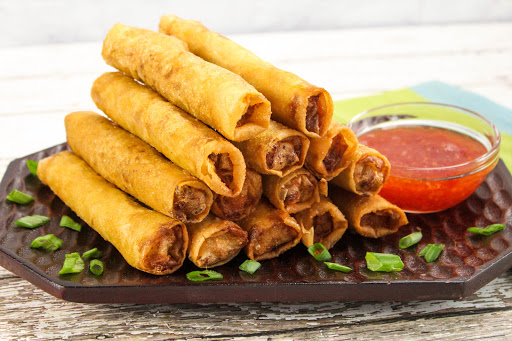

Lumpia

A lumpia is a Filipino egg roll. Lumpia are stuffed with all kinds of delicious vegetables and spices.
Ingredients
- 3 cloves garlic, minced
- 1 cup chopped onions
- 2 tablespoons vegetable oil
- ½ teaspoon ground black pepper
- 1 tablespoon soy sauce
- 1 cup water
- ½ cup diced carrots
- ½ cup green beans, French cut
- ½ cup diced celery
- 1 (10 ounce) can bamboo shoots, julienned
- 1 (8 ounce) can water chestnuts, drained and julienned
- ½ cup jicama, peeled and julienned
- ½ cup bean sprouts
- 1 (16 ounce) package egg roll wrappers
- 1 quart vegetable oil for frying
Steps
- In a wok or skillet, saute the garlic and onions in hot oil until the onions are translucent.
Add the pepper and soy sauce and saute further.
- Drain the excess oil, add the water and bring to a boil. Add the carrots and simmer for 5 minutes.
Add the green beans, celery, bamboo shoots, water chestnuts, and jicama. Simmer for another 5 minutes.
Remove the pan from heat and add the bean sprouts. Cool to room temperature.
- Place three heaping tablespoons of the filling diagonally near one corner of each wrapper, leaving a 1 1/2 inch space at both ends.
Fold the side along the length of the filling over the filling, tuck in both ends, and roll neatly. Keep the roll tight as you assemble.
Moisten the other side of the wrapper with water to seal the edge. Cover the rolls with plastic wrap to retain moisture.
- Heat a wok over medium heat, add oil to 1/2 inch depth, and heat for 5 minutes. Place 3 or 4 egg rolls in the oil, gently.
Fry the rolls until all sides are golden brown. Drain on paper towels. Serve immediately